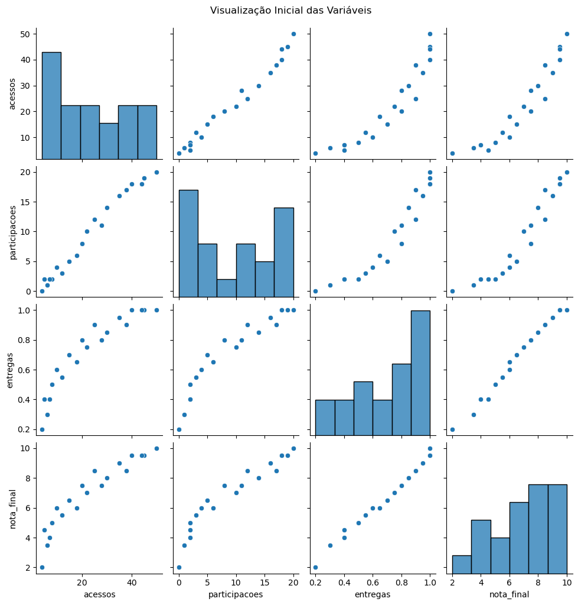
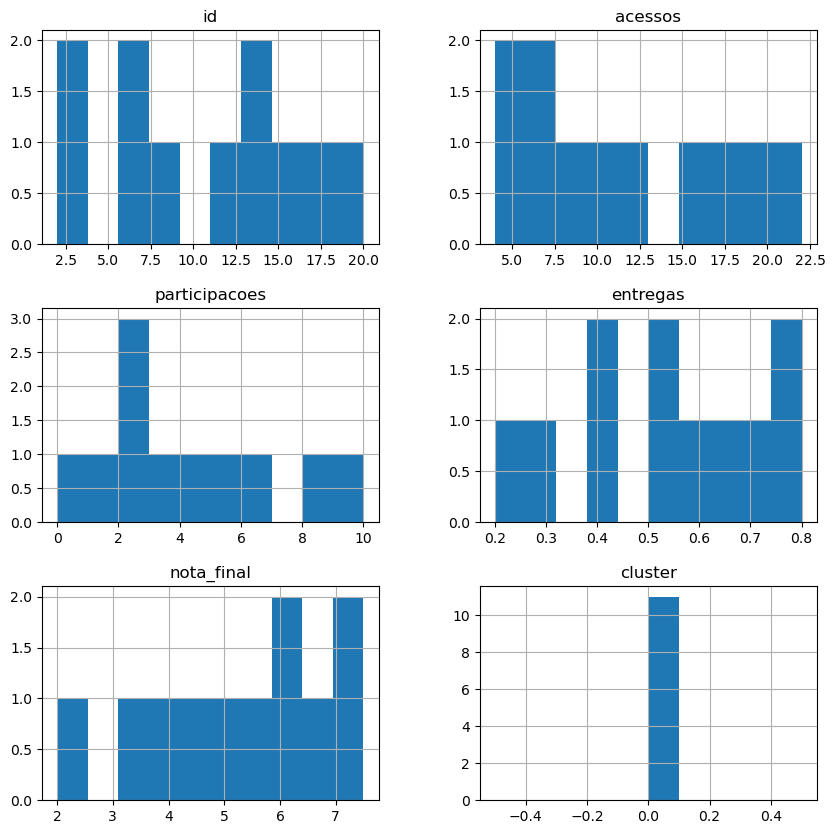
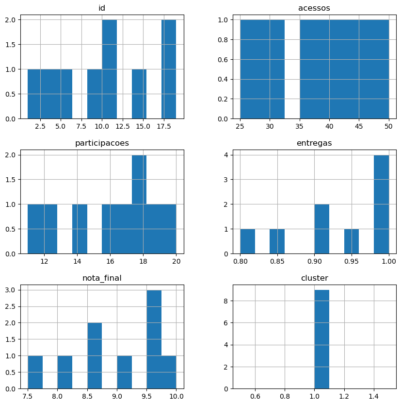

---
title: "Introduction to Python"
author: "Your Name"
date: "`r Sys.Date()`"
output: html_document
toc: true
toc_depth: 2
number_sections: true
theme: cerulean
highlight: tango
code_folding: hide
---Identificação de Perfis de Estudantes com Modelos Descritivos
Parte 1: Conteúdo Teórico Explicativo
Este notebook tem como objetivo demonstrar a identificação de perfis de estudantes com base em dados educacionais, utilizando modelos descritivos e técnicas de agrupamento (clustering).
Pontos-chave: - Modelos descritivos ajudam a resumir, explorar e visualizar dados. - No contexto educacional, podemos usar esses modelos para identificar perfis de engajamento e desempenho. - O clustering é uma técnica não supervisionada que agrupa instâncias semelhantes entre si.
Técnicas usadas neste notebook: - Estatística descritiva (média, desvio padrão) - Visualização de dados (gráficos) - K-means clustering
Parte 2: Exemplo Prático
Importação de Bibliotecas
import pandas as pd
import numpy as np
import matplotlib.pyplot as plt
import seaborn as sns
from sklearn.cluster import KMeans
from sklearn.preprocessing import StandardScaler
from sklearn.decomposition import PCA
from sklearn.metrics import silhouette_scoreCarregamento do Dataset Exemplo
O dataset simulado contém dados de estudantes com as seguintes colunas: - ‘id’: identificador do estudante - ‘acessos’: número de acessos ao AVA - ‘participacoes’: número de interações em fóruns - ‘entregas’: percentual de tarefas entregues - ‘nota_final’: nota final no curso
# Dataset simulado
data = {
'id': range(1, 21),
'acessos': [25, 10, 5, 40, 35, 20, 15, 8, 50, 30, 45, 12, 18, 22, 28, 6, 4, 38, 44, 7],
'participacoes': [12, 4, 2, 18, 16, 8, 5, 2, 20, 14, 19, 3, 6, 10, 11, 1, 0, 17, 18, 2],
'entregas': [0.9, 0.6, 0.4, 1.0, 0.95, 0.8, 0.7, 0.5, 1.0, 0.85, 1.0, 0.55, 0.65, 0.75, 0.8, 0.3, 0.2, 0.9, 1.0, 0.4],
'nota_final': [8.5, 6.0, 4.5, 9.5, 9.0, 7.5, 6.5, 5.0, 10.0, 8.0, 9.5, 5.5, 6.0, 7.0, 7.5, 3.5, 2.0, 8.5, 9.5, 4.0]
}
df = pd.DataFrame(data)
df.head()| id | acessos | participacoes | entregas | nota_final | |
|---|---|---|---|---|---|
| 0 | 1 | 25 | 12 | 0.90 | 8.5 |
| 1 | 2 | 10 | 4 | 0.60 | 6.0 |
| 2 | 3 | 5 | 2 | 0.40 | 4.5 |
| 3 | 4 | 40 | 18 | 1.00 | 9.5 |
| 4 | 5 | 35 | 16 | 0.95 | 9.0 |
Estatística Descritiva
print("\nEstatísticas Descritivas:")
print(df.describe())
Estatísticas Descritivas:
id acessos participacoes entregas nota_final
count 20.00000 20.000000 20.000000 20.000000 20.000000
mean 10.50000 23.100000 9.400000 0.712500 6.875000
std 5.91608 14.927544 6.923644 0.252292 2.276164
min 1.00000 4.000000 0.000000 0.200000 2.000000
25% 5.75000 9.500000 2.750000 0.537500 5.375000
50% 10.50000 21.000000 9.000000 0.775000 7.250000
75% 15.25000 35.750000 16.250000 0.912500 8.625000
max 20.00000 50.000000 20.000000 1.000000 10.000000Visualização Inicial dos Dados
sns.pairplot(df.drop('id', axis=1))
plt.suptitle('Visualização Inicial das Variáveis', y=1.02)
plt.show()
Normalização dos Dados
features = ['acessos', 'participacoes', 'entregas', 'nota_final']
scaler = StandardScaler()
df_scaled = scaler.fit_transform(df[features])Determinação do Melhor Número de Clusters com Silhouette
range_n_clusters = range(2, 10)
best_n = 2
best_score = -1
for n_clusters in range_n_clusters:
kmeans = KMeans(n_clusters=n_clusters, random_state=42)
cluster_labels = kmeans.fit_predict(df_scaled)
silhouette_avg = silhouette_score(df_scaled, cluster_labels)
print(f"Para n_clusters = {n_clusters}, o coeficiente de silhouette é {silhouette_avg:.4f}")
if silhouette_avg > best_score:
best_n = n_clusters
best_score = silhouette_avg
print(f"\nMelhor número de clusters com base no silhouette: {best_n}")Para n_clusters = 2, o coeficiente de silhouette é 0.5704
Para n_clusters = 3, o coeficiente de silhouette é 0.5292
Para n_clusters = 4, o coeficiente de silhouette é 0.4198
Para n_clusters = 5, o coeficiente de silhouette é 0.3869
Para n_clusters = 6, o coeficiente de silhouette é 0.3555
Para n_clusters = 7, o coeficiente de silhouette é 0.3754
Para n_clusters = 8, o coeficiente de silhouette é 0.2681
Para n_clusters = 9, o coeficiente de silhouette é 0.2372
Melhor número de clusters com base no silhouette: 2Aplicando KMeans com o melhor número de clusters
kmeans = KMeans(n_clusters=best_n, random_state=42)
df['cluster'] = kmeans.fit_predict(df_scaled)df| id | acessos | participacoes | entregas | nota_final | cluster | |
|---|---|---|---|---|---|---|
| 0 | 1 | 25 | 12 | 0.90 | 8.5 | 1 |
| 1 | 2 | 10 | 4 | 0.60 | 6.0 | 0 |
| 2 | 3 | 5 | 2 | 0.40 | 4.5 | 0 |
| 3 | 4 | 40 | 18 | 1.00 | 9.5 | 1 |
| 4 | 5 | 35 | 16 | 0.95 | 9.0 | 1 |
| 5 | 6 | 20 | 8 | 0.80 | 7.5 | 0 |
| 6 | 7 | 15 | 5 | 0.70 | 6.5 | 0 |
| 7 | 8 | 8 | 2 | 0.50 | 5.0 | 0 |
| 8 | 9 | 50 | 20 | 1.00 | 10.0 | 1 |
| 9 | 10 | 30 | 14 | 0.85 | 8.0 | 1 |
| 10 | 11 | 45 | 19 | 1.00 | 9.5 | 1 |
| 11 | 12 | 12 | 3 | 0.55 | 5.5 | 0 |
| 12 | 13 | 18 | 6 | 0.65 | 6.0 | 0 |
| 13 | 14 | 22 | 10 | 0.75 | 7.0 | 0 |
| 14 | 15 | 28 | 11 | 0.80 | 7.5 | 1 |
| 15 | 16 | 6 | 1 | 0.30 | 3.5 | 0 |
| 16 | 17 | 4 | 0 | 0.20 | 2.0 | 0 |
| 17 | 18 | 38 | 17 | 0.90 | 8.5 | 1 |
| 18 | 19 | 44 | 18 | 1.00 | 9.5 | 1 |
| 19 | 20 | 7 | 2 | 0.40 | 4.0 | 0 |
Analise os grupos 0 e 1 e informe as característica de cada grupo.
df| id | acessos | participacoes | entregas | nota_final | cluster | |
|---|---|---|---|---|---|---|
| 0 | 1 | 25 | 12 | 0.90 | 8.5 | 1 |
| 1 | 2 | 10 | 4 | 0.60 | 6.0 | 0 |
| 2 | 3 | 5 | 2 | 0.40 | 4.5 | 0 |
| 3 | 4 | 40 | 18 | 1.00 | 9.5 | 1 |
| 4 | 5 | 35 | 16 | 0.95 | 9.0 | 1 |
| 5 | 6 | 20 | 8 | 0.80 | 7.5 | 0 |
| 6 | 7 | 15 | 5 | 0.70 | 6.5 | 0 |
| 7 | 8 | 8 | 2 | 0.50 | 5.0 | 0 |
| 8 | 9 | 50 | 20 | 1.00 | 10.0 | 1 |
| 9 | 10 | 30 | 14 | 0.85 | 8.0 | 1 |
| 10 | 11 | 45 | 19 | 1.00 | 9.5 | 1 |
| 11 | 12 | 12 | 3 | 0.55 | 5.5 | 0 |
| 12 | 13 | 18 | 6 | 0.65 | 6.0 | 0 |
| 13 | 14 | 22 | 10 | 0.75 | 7.0 | 0 |
| 14 | 15 | 28 | 11 | 0.80 | 7.5 | 1 |
| 15 | 16 | 6 | 1 | 0.30 | 3.5 | 0 |
| 16 | 17 | 4 | 0 | 0.20 | 2.0 | 0 |
| 17 | 18 | 38 | 17 | 0.90 | 8.5 | 1 |
| 18 | 19 | 44 | 18 | 1.00 | 9.5 | 1 |
| 19 | 20 | 7 | 2 | 0.40 | 4.0 | 0 |
summary = {}
Labels = ['acessos', 'participacoes', 'entregas', 'nota_final']
for label in Labels:
for index in range(2):
summary[index] = df[df[label] == index].describe().T # .describe method provides general statistics about the datasummary[0]| count | mean | std | min | 25% | 50% | 75% | max | |
|---|---|---|---|---|---|---|---|---|
| id | 0.0 | NaN | NaN | NaN | NaN | NaN | NaN | NaN |
| acessos | 0.0 | NaN | NaN | NaN | NaN | NaN | NaN | NaN |
| participacoes | 0.0 | NaN | NaN | NaN | NaN | NaN | NaN | NaN |
| entregas | 0.0 | NaN | NaN | NaN | NaN | NaN | NaN | NaN |
| nota_final | 0.0 | NaN | NaN | NaN | NaN | NaN | NaN | NaN |
| cluster | 0.0 | NaN | NaN | NaN | NaN | NaN | NaN | NaN |
# GRUPO 0: Coloque seu código aqui...
df[df['cluster'] == 0].hist(figsize=(10,10));
# GRUPO 1: Coloque seu código aqui...
df[df['cluster'] == 1].hist(figsize=(10,10));
Visualização dos Clusters com PCA
df_pca--------------------------------------------------------------------------- NameError Traceback (most recent call last) Cell In[11], line 1 ----> 1 df_pca NameError: name 'df_pca' is not defined
pca = PCA(n_components=2)
df_pca = pca.fit_transform(df_scaled)
df['pca1'] = df_pca[:, 0]
df['pca2'] = df_pca[:, 1]
plt.figure(figsize=(8,6))
sns.scatterplot(data=df, x='pca1', y='pca2', hue='cluster', palette='Set2', s=100)
plt.title('Visualização dos Clusters com PCA')
plt.xlabel('Componente Principal 1')
plt.ylabel('Componente Principal 2')
plt.legend(title='Cluster')
plt.grid(True)
plt.show()# Parte 9: Interpretação dos Perfis
print("\nMédias por cluster:")
print(df.groupby('cluster')[features].mean().round(2))